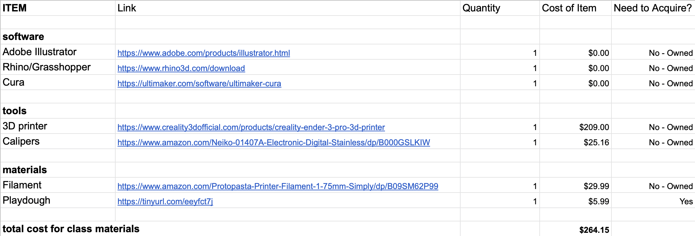
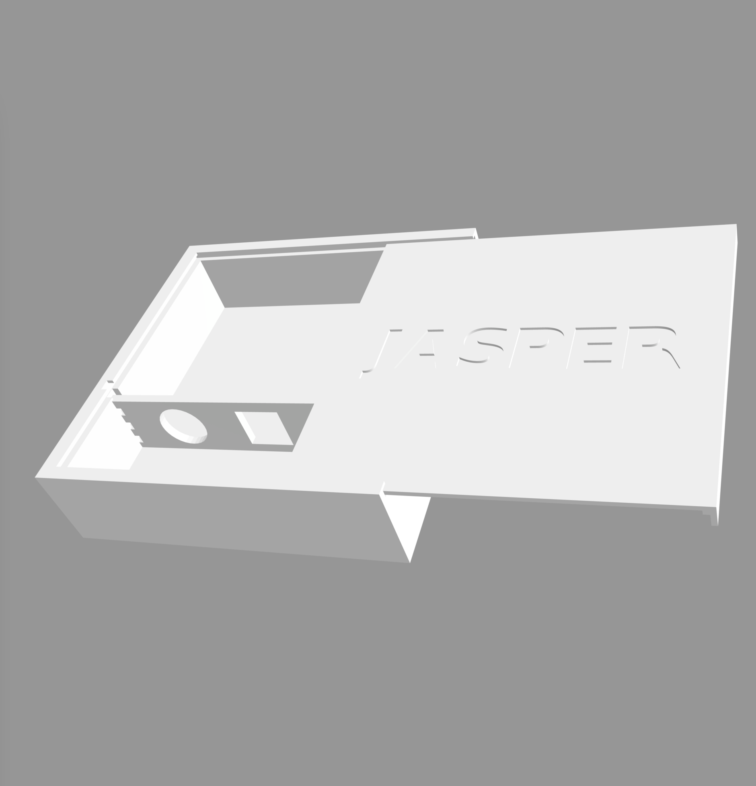
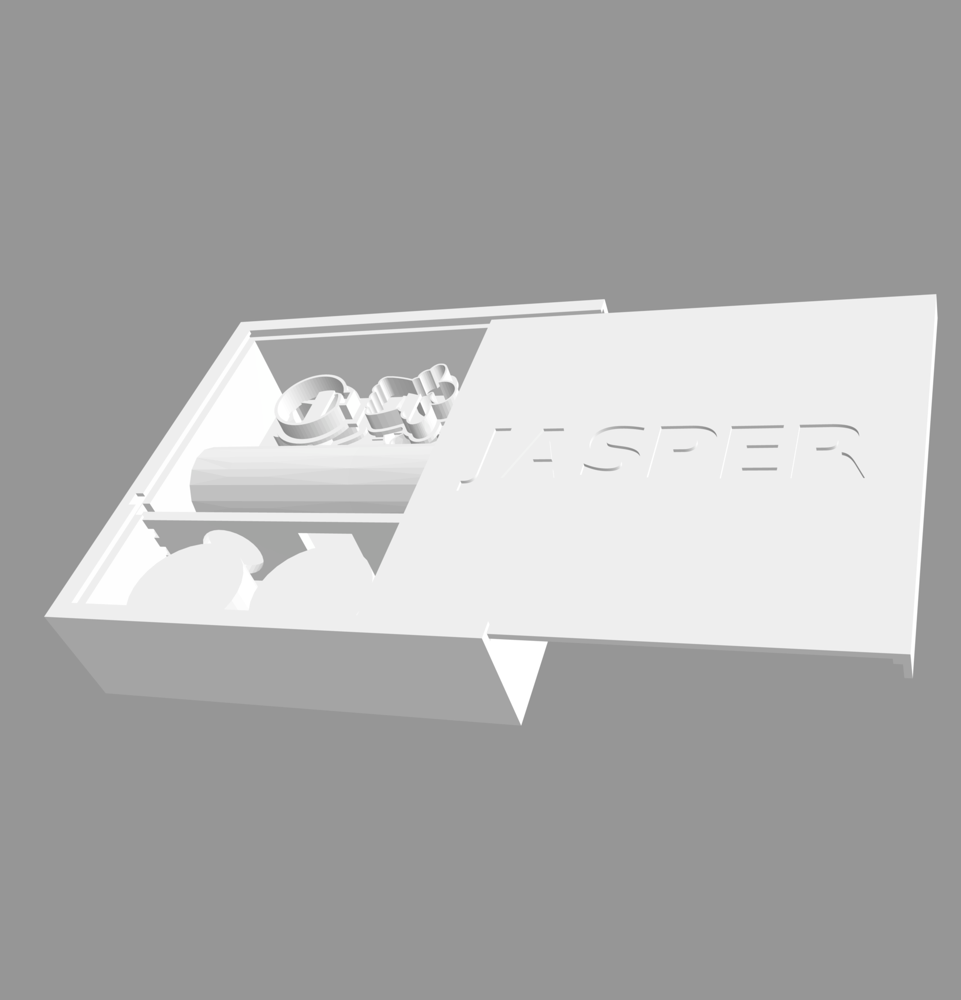

A Sensory Toolbox for Jasper
Concept

For my final project, I created a sensory toolbox appropriate for a child between the ages of 3 and 5. Sensory play is when children are engaged in play through their sense of touch, sight, sound, taste, and hearing. Sensory play with manipulative toys such as cookie cutters or child-safe scisors is particularly beneficial in fine motor skill development. This box is intended for a 3 year old who loves to create things and help in the kitchen and play "restaurant".
I decided to make a box that holds storebought stock parts like playdough, cookie-cutter style manupulatives, and a removeable divider that acts as an additional tool for play. The box has a lid that can slides on for a secure fit and can also act as a tray for the child to play with the playdough on.
Bill of Materials

Design


The box needed to accommodate mini playdough containters, cookie cutters, and a rolling pin. The box will close with a lid that can slide on for a secure fit and can also act as a tray for the child to play with the playdough on. A divideer that will keep the playdough containers from sliding around acts as an additional manipulative toy.


Techniques
Techniques I uses include: Creating and exporting .dxf files in Adobe Illustrator, Modeling in Rhino, Slicing with Cura, 3D Printing, Incorporating and Measuring stock parts.
Procedure
1. Modeling the Box, Lid, Divider, Cookie Cutters, & Rolling Pin in Rhino: Using Rhino, I modeled the three parts of the box: the main body, the top, and the divider that also functions as a manipulative tool for fine motor skills development. I also made the rolling pin in Rhino and imported .dxf files from AI to create the cookie cutters. I used the functions extrude, cap, and mesh as well as meshbooleanunion and meshbooleandifference in order to bring parts together. To create the cookie cutter shapes, I used Adobe Illustrator to create paths and offset the paths in order to make identical shapes that could be extruded and caped to form a solid object for printing. I exported the AI files to .dxf files when I was happy with the shapes and used the commands Mesh and Join to make closed meshes that could be exported as STL files and sliced in Cura.
2. 3D Printing the Box, Lid, & Divider, Cookie Cutters, & Rolling Pin: I did all prints with white PLA filament. I did a total of 17 prints, including test prints. I started off by printing the box which took 7 hours and 15 minutes at low quality. To test the fit of the lid, I did a smaller test print which took one hour at low quality.

The printed test box fit well but was too small to hold the play dough parts which measured a their largest points roughly 52x29mm. I adjusted the size of the box in Rhino to accommodate the play dough pieces and checked the fit of all of the elements that I would be using the box to hold. The first print that I did of the cookie cutters was slightly smaller than I wanted and when I tested the cookie cutters on the play dough they were a little hard to remove from the play dough. I also noticed some difficulty printing some shapes that I had created, specifically the scalloped edges of the angel.
3. Making Adjustments: I went back to rhino and made adjustments to the cookie cutters, adding finger holds to help smaller fingers remove the cookie cutter, and reshaping some of the tools.
4. Re-printing Parts: With all of the adjustments made, I reprinted all of the parts at standard quality, the lid taking 2hrs30m, the box took 12hrs22m, the cookie cutters took 3hrs12m, the rolling pin took 1hr,18m, and the divider took 2hrs5m.
5. Finishing Touches: Change of plans- I intended to use a non-toxic paint to add dimension to the lid of the box, however when I attempted to do this, the finish odd because of the lines in the print - I decided that the box looked best unpainted.
How to Use It
1. Unpacking the Toolbox
2. Using the Tools
3. Packing it Up!
Finally, when I realized the letters would imprint backwards on the playdough....
Shout Outs: Everyone in the discord chat for being so supportive!.